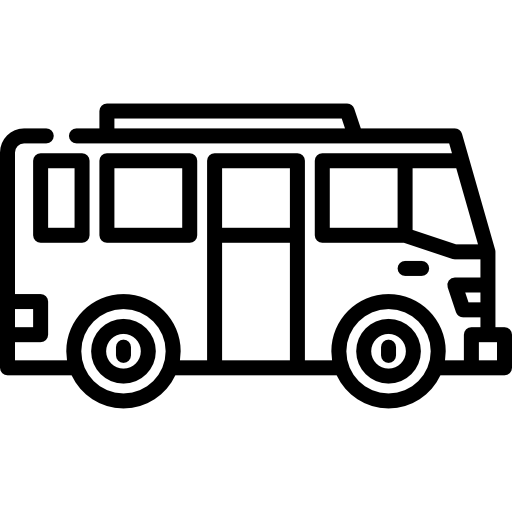

Leitos
leitos UTI adulto
702
leitos enfermaria
30
Casos de COVID-19
confirmados
100.231
recuperados
97.657
Critérios da classificação em fases
Para garantir o acesso aos serviços à saúde, evitando o colapso do nosso sistema, iremos adotar o sistema de fases conforme os critérios a seguir.
| Critério | Indicador | Fase 1 Alerta máximo | Fase 2 Controle | Fase 3 Flexibilização | Fase 4 Abertura parcial |
|---|---|---|---|---|---|
| Capacidade do Sistema de Saúde | Taxa de ocupação de leitos UTI COVID | Acima de 80% | 70 - 80% | 60 - 70% | Abaixo de 60% |
| Leitos de UTI COVID 100K habitantes | Abaixo de 3,0 | 3,0 - 5,0 | Acima de 5,0 | Acima de 5,0 | |
| Evolução da epidemia |
Novos casos últimos 7 dias/ novos casos 7 dias anteriores |
Acima de 2,0 | 1,0 - 2,0 | 1,0 - 2,0 | Abaixo de 1,0 |
| Novas internações últimos 7 dias/ novas internações 7 dias anteriores |
Acima de 1,5 | 1,0 - 1,5 | 0,5 - 1,0 | Abaixo de 0,5 | |
| óbitos por COVID nos últimos 7 dias/ novas internações 7 dias anteriores |
Acima de 2,0 | 1,0 - 2,0 | 0,5 - 1,0 | Abaixo de 0,5 |

Setores
Confira quais setores vão abrir de acordo com a fase que se encontra sua cidade.
| Setores Temáticos | Fase 1 | Fase 2 | Fase 3 | Fase 4 | Fase 5 |
|---|---|---|---|---|---|
| ✗ | ✗ | ✗ | ✗ | 🗸 | |
 |
✗ | abre com restrições | 🗸 | 🗸 | 🗸 |
 |
✗ | abre com restrições | 🗸 | 🗸 | 🗸 |
| ✗ | abre com restrições | 🗸 | 🗸 | 🗸 | |
 |
✗ | ✗ | abre com restrições | abre com restrições | 🗸 |
 |
✗ | abre com restrições | abre com restrições | abre com restrições | 🗸 |
 |
✗ | abre com restrições | abre com restrições | abre com restrições | 🗸 |
 |
✗ | ✗ | abre com restrições | abre com restrições | 🗸 |
 |
✗ | ✗ | ✗ | abre com restrições | 🗸 |
| ✗ | ✗ | ✗ | ✗ | 🗸 | |
 |
✗ | ✗ | ✗ | ✗ | 🗸 |
 |
|||||
|  | |||||
O covid vai passar mas para isso precisamos que você faça sua parte. #FicaEmCasa

Day,
Month
00,
Year
00:
00:
00
AM